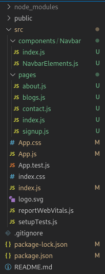

I dette blogpost laver jeg en hjemmeside som består af flere sider, ved brug af React.js og React Router. En prioitet jeg har
givet mig selv med dette mini-projekt er, at jeg skal kunne skifte mellem sider uden brug af href="PathToHTML.html".
Jeg vil følge en tutorial i denne blogpost. Kilden kan findes nederst på denne side
Først laver åbner jeg en shell, og skriver npx create-react-app test-website, så cd test-website.
Og da jeg vælger at bruge React Router, skal den også installeres, npm install react-router-dom.
Og da vi gerne ville kunne style hvores hjemmeside, så køre vi også npm install --save styled-components
og npm install react-icons. Den sidste npm package fandt jeg selv ud af skulle installeres, da den ikke længere
følger med styled-components.
Programstrukturen er det næste vi skal til nu. Inde I src folderen, laver vi to nye mapper. components
og pages. En hurtig ting at nævne, JavaScript giver ikke særlige gode fejlbeskeder, så jeg brugte ca. en time på
at finde ud af, at jeg havde et mellemrum til sidst i components mappenavn. I den mappe laver vi også en ny mappe
Navbar.
I Navbar mappen laver vi to filer. index.js og NavbarElements.js. I NavbarElements.js
laver vi egentlig bare noget css, som vi parser til resten af programmet, når vi importere de konstanter, vi har lavet. Kode set i
billedet under.
I index.js laver vi nogle HTML elementer, som bruger de konstanter, vi lige har lavet i NavbarElements.js.
Som den kvikke læser nok har lagt mærke til, så mangler vi en "home" entry i navigationsmenuen. Man skal bare gøre det samme som de
andre entries, dog skal man skrive <Navlink to="/" activeStyle>Home</Navlink>
Tid til pages mappen. Her laver vi 5 filer. index.js, contact.js, blogs.js,
signup.js og about.js. Det eneste vi laver i de filer, er at eksportere nogle HTML tags. Storset alle
filer ser ud som i billedet under.
Nu kommer vi til det spændene. Vores "root" App.js er hvad der kontrollere here siden. Det er her vi opsætter React Router
og navigationsbaren. Som vi ser i billedet under, så importere vi alle filer vi har lavet indtil videre, undtagen
NavbarElements.js. På linje 3 behøver man ikke skrive "index", jeg skrev det for at debuggen den fejl jeg havde tidligere.
Hvis man ikke inkludere et navn på en fil i sin filsti, vil index.js altid blive tjekket efter, først.
Og lige til sidst, et billede af mappestrukturen.
